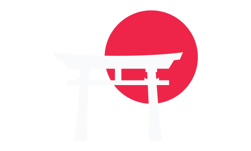

¿Qué es Kyoto?
Kyoto es la ciudad capital de la Prefectura de Kyoto en Japón, ubicada en la región de Kansai en la isla de Honshu. Es una parte del área metropolitana de Keihanshin, junto con Osaka y Kobe, y su población en 2020 era de 1,46 millones de personas. La ciudad es considerada la capital cultural de Japón y es un importante destino turístico. Kyoto es una de las municipalidades más antiguas de Japón y fue elegida como la nueva sede de la corte imperial en el año 794. La ciudad original fue nombrada Heian-kyō y fue diseñada siguiendo el modelo de las antiguas capitales chinas de Chang'an y Luoyang. Los emperadores de Japón gobernaron desde Kyoto durante los siguientes once siglos hasta 1869. Kyoto es el hogar de numerosos templos budistas, santuarios shintoístas, palacios y jardines, algunos de los cuales han sido designados como Patrimonio de la Humanidad por la UNESCO. También es el hogar de la compañía de videojuegos Nintendo y de varias instituciones de educación superior, incluida la Universidad de Kyoto. La ciudad fue preservada de la destrucción durante la Segunda Guerra Mundial y su patrimonio cultural de la preguerra ha sido en gran parte conservado.
Historia de la ciudad
La evidencia arqueológica sugiere que la ocupación humana en Kyoto comenzó en el Paleolítico, pero hay pocos registros antes del siglo VI, cuando se cree que se estableció el Santuario Shimogamo. Durante el siglo VIII, el emperador Kanmu trasladó la capital a Heian-kyo (Kyoto), alejándose del poder clerical en Nara. Aunque los gobernantes militares establecieron sus gobiernos en otras ciudades, Kyoto siguió siendo la capital de Japón hasta 1869. En el período Sengoku, la ciudad sufrió una gran destrucción durante la Guerra de Onin (1467-1477), pero fue reconstruida por Toyotomi Hideyoshi en el siglo XVI. Durante el período Edo, la economía de la ciudad prosperó y la población superó el millón en 1932. Kyoto fue considerada como un posible objetivo para la bomba atómica durante la Segunda Guerra Mundial, pero fue excluida y, por lo tanto, fue una de las pocas ciudades japonesas con edificios preguerra. En 1956, Kyoto se convirtió en una ciudad designada por ordenanza gubernamental y en 1997 acogió la conferencia que dio lugar al Protocolo de Kioto sobre emisiones de gases de efecto invernadero.
Geografía y demografía
Kyoto está ubicado en un valle rodeado de montañas, lo que provoca veranos calurosos e inviernos fríos con nevadas. La ciudad cuenta con tres ríos y una gran mesa de agua subterránea que proporciona agua dulce, aunque el drenaje del agua de lluvia está disminuyendo debido a la urbanización. El clima de Kyoto es subtropical húmedo, con una marcada variación estacional en temperatura y precipitaciones. La temporada de lluvias comienza a mediados de junio y dura hasta finales de julio. La población de Kyoto se concentra en la ciudad y, aunque ha disminuido en los últimos años, sigue siendo la novena ciudad más grande de Japón.
Economía y turismo
La tecnología de la información y la electrónica son industrias clave en Kyoto, hogar de las sedes de Nintendo, Kyocera y otras compañías importantes. El turismo nacional e internacional es una gran fuente de ingresos para la economía de Kyoto, con la ciudad siendo un importante centro de fabricación de kimonos y sake. Kyoto también es un centro académico, con la Universidad de Kyoto siendo una de las mejores universidades nacionales de Japón y otras universidades importantes ubicadas en la ciudad. La ciudad también alberga programas educativos de otras universidades de otros países. Sin embargo, la pandemia de COVID-19 ha afectado significativamente al turismo y ha tenido un impacto en la economía de la ciudad.
Arquitectura, arte y cultura
Kyoto es una de las ciudades más conservadas de Japón, con unos 2.000 templos y santuarios, siendo un centro cultural y artístico importante. La ciudad fue planificada según el feng shui tradicional chino, con el Palacio Imperial mirando hacia el sur y las áreas Ukyō y Sakyō ubicadas en el oeste y este, respectivamente. El centro de la ciudad cuenta con varias galerías comerciales cubiertas solo para peatones, como Teramachi Street y Shinkyōgoku Street. Entre los templos más famosos se encuentran el Kiyomizu-dera, un magnífico templo de madera sostenido por pilares en una montaña; el Kinkaku-ji, el Templo del Pabellón Dorado; el Ginkaku-ji, el Templo del Pabellón de Plata; y el Ryōan-ji, famoso por su jardín de rocas. El Heian Jingū es un santuario shintoísta que celebra a la familia imperial y conmemora a los primeros y últimos emperadores que residieron en Kyoto. La ciudad es famosa por sus festivales tradicionales que se celebran desde hace más de mil años, como el Aoi Matsuri en mayo y el Gion Matsuri en julio, uno de los tres grandes festivales de Japón, con una gran procesión el 17 de julio. Además, la ciudad es conocida por su deliciosa gastronomía, incluyendo verduras peculiares de la región de Kyoto y el restaurante más antiguo de la ciudad, Honke Owariya, fundado en 1465. También es conocida por su industria de televisión y cine, con la mayoría de películas de samuráis siendo filmadas en Toei Uzumasa Eigamura, que cuenta con réplicas de edificios tradicionales japoneses utilizados como escenarios. El dialecto hablado en Kyoto se conoce como Kyō-kotoba o Kyōto-ben, un dialecto constituyente del dialecto de Kansai.
¿Cómo moverse?
Kyoto cuenta con una extensa red de transporte que incluye ferrocarriles, trenes de alta velocidad, líneas convencionales, metro, tranvías y autobuses. La estación principal de la ciudad es la Estación de Kyōto, que conecta la línea Tokaido Shinkansen con cinco líneas de JR West, una línea de Kintetsu y una línea de metro municipal. La Keihan Electric Railway, la Hankyu Railway y otras redes ferroviarias ofrecen servicios frecuentes dentro de la ciudad y hacia otras ciudades y suburbios en la región de Kinki. La autoridad del Transporte Municipal de Kyoto opera el Metro Municipal de Kyoto, que consta de dos líneas: la Línea Karasuma y la Línea Tōzai. La red de autobuses municipales de Kyoto es extensa y también operan empresas privadas dentro de la ciudad.